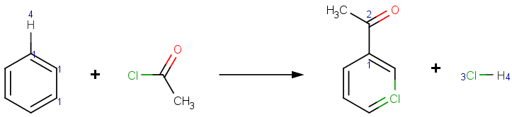
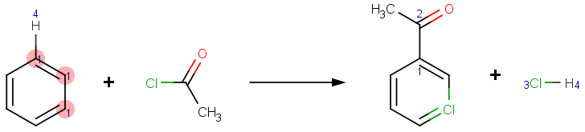

| ← About Strutcure Checker API | ↑ Structure Checker Developer's Guide | Create Graphical User Interface for Checker Options → |
Structure Checkers meant to detect well-defined issues in chemical structures. A Checker should be simple, and focus on a single problem. Although a Checker can have options to fine-tune its behavior, it is not recommended to create Checkers focusing more issues.
You will need Java 6 SDK and Marvin Beans 6.0 (or newer) installed on your computer. An Integrated Development Environment (IDE) such as Eclipse, IntelliJ IDEA or NetBeans is recommended. This training material is using Eclipse.
Create a new Java project, and add the MarvinBeans.jar to the class path.
Hint: The location of MarvinBeans.jar is the <installation path>/MarvinBeans/lib folder. To add the jar to the class path in Eclipse, go to Project/Properties/Java Build Path/Libraries; press the Add External Library button, and browse the MarvinBeans.jar from the file system.
We are going to implement a new Structure Checker to detect atom map duplications in reactions only. The Checker will report if the same mapping is used for more than one atom in the reactant or in the product side. With an option, the user can specify which side of the reaction should be checked for map duplications.
Create a new DuplicateAtomMapChecker class to custom.checkers
package that extends the chemaxon.checkers.ExternalStructureChecker class provided by
MarvinBeans.jar.
Download the example and find "DuplicateAtomMapChecker.java".
package custom.checkers; import chemaxon.checkers.ExternalStructureChecker; import chemaxon.checkers.result.StructureCheckerResult; import chemaxon.struc.Molecule; public class DuplicateAtomMapChecker extends ExternalStructureChecker { /** error code of duplicate atom map checker */ public static final String DUPLICATE_ATOM_MAP_CHECKER_ERROR = "duplicateAtomMapCheckerError"; /** * Constructs a duplicate atom map checker with default settings. */ public DuplicateAtomMapChecker() { super(DUPLICATE_ATOM_MAP_CHECKER_ERROR); } @Override protected StructureCheckerResult check1(Molecule molecule) { // TODO Auto-generated method stub return null; } }
The ExternalStructureChecker superclass requires a String argument to identify
the type of problem this checker can detect. We can use this identifier to offer fixers for the problem later.
Note: Since fixers are not bound to checkers, but to error types, different Structure Checkers using the same error type will share the compatible fixers as well.
To fulfill the requirement of specifying the side of the reaction to be checked for duplicate mappings, the code must be enhanced with:
/** * Specifies the reaction side to check for duplicate mappings. */ public enum ReactionSide { /** check the reactant side only */ REACTANT, /** check the product side only */ PRODUCT, /** check both sides */ BOTH } private ReactionSide reactionSide; /** * Returns the reaction side to check for duplicate mappings. * * @return the reaction side to check for duplicate mappings */ public ReactionSide getReactionSide() { return reactionSide; } /** * Sets the reaction side to check for duplicate mappings. * * @param reactionSide * the reaction side to check */ public void setReactionSide(ReactionSide reactionSide) { ReactionSide oldValue = getReactionSide(); this.reactionSide = reactionSide; propertyChangeSupport.firePropertyChange(REACTION_SIDE, oldValue, reactionSide); }
To properly use the new checker in ChemAxon applications, it is required to make the reaction side parameter persistent. That is achieved with:
@Persistent private ReactionSide reactionSide = ReactionSide.BOTH; /** * Constructs a duplicate atom map checker with specified settings. * * @param params * the settings to use */ // NOTE: this constructor is required by StructureCheckerFactory // if checker has parameters. public DuplicateAtomMapChecker(Map<String, String> params) { super(DUPLICATE_ATOM_MAP_CHECKER_ERROR); this.reactionSide = ReactionSide.BOTH; if (params.containsKey(REACTION_SIDE)) { String value = params.get(REACTION_SIDE).toUpperCase(); try { this.reactionSide = ReactionSide.valueOf(value); } catch (IllegalArgumentException e) { // invalid argument set, using default } } }
The @Persistent annotation tells the Structure Checker API to save the value of the
member when exporting the Checker to a configuration file. To retrieve the current value, a
corresponding getter will be called, in this case the getReactionSide() function.
When a Checker has a parameter, it must have a constructor with Map<String, String>
argument. The Structure Checker API will try to create the Checker instance by passing key value
pairs according to the parameters.
The new Checker will display properly if it has a @CheckerInfo annotation set, and to make it work,
it is required to add the logic to the check1 method.
@CheckerInfo(
name = "Duplicate Atom Map Checker",
description = "Checks for mapping duplicates in a reaction.",
noErrorMessage = "No duplicate mappings found",
moreErrorMessage = "duplicate mappings found",
actionStringToken= "duplicateatommap")
public class DuplicateAtomMapChecker extends ExternalStructureChecker {
@Override
protected StructureCheckerResult check1(Molecule molecule) {
// we are checking only reactions
if (molecule.isReaction()) {
// create a list for atoms
List<MolAtom> atomList = new ArrayList<MolAtom>();
if (ReactionSide.REACTANT.equals(getReactionSide())
|| ReactionSide.BOTH.equals(getReactionSide())) {
// if we are checking reactants, add the duplicates to the list
atomList.addAll(getAtomsWithMappingDuplicates(RxnMolecule
.getReaction(molecule).getReactants()));
}
if (ReactionSide.PRODUCT.equals(getReactionSide())
|| ReactionSide.BOTH.equals(getReactionSide())) {
// if we are checking products, add the duplicates to the list
atomList.addAll(getAtomsWithMappingDuplicates(RxnMolecule
.getReaction(molecule).getProducts()));
}
if (!atomList.isEmpty()) {
// create and return the result
return new DefaultExternalStructureCheckerResult(this,
atomList, Collections.<MolBond> emptyList(), molecule,
DUPLICATE_ATOM_MAP_CHECKER_ERROR);
}
}
// return with no result
return null;
}
/**
* Returns a list of atoms that have the same mapping in the input set.
*
* @param molecules
* the input set
* @return a list of atoms that have the same mapping in the input set
*/
protected static List<MolAtom> getAtomsWithMappingDuplicates(
Molecule[] molecules) {
// create a list for results
List<MolAtom> list = new ArrayList<MolAtom>();
// create a map for mapping - atom data
Map<Integer, MolAtom> mappings = new HashMap<Integer, MolAtom>();
// for each molecule in the input set
for (Molecule molecule : molecules) {
// iterate all atoms in the molecule
for (MolAtom atom : molecule.getAtomArray()) {
int atomMap = atom.getAtomMap(); // get the atom map
// if atom has mapping
if (atomMap != 0) {
// check if mapping already found
if (mappings.containsKey(atomMap)) {
// if the list not contains the other atom with same
// mapping, add it to the list
if (!list.contains(mappings.get(atomMap))) {
list.add(mappings.get(atomMap));
}
list.add(atom); // add atom to the error list
} else {
mappings.put(atomMap, atom); // add mapping to the
// mappings set
}
}
}
}
// return the result
return list;
}
After implementing the checker, it will highlight the errors in MarvinSketch.

| ← About Structure Checker API | ↑ Structure Checker Developer's Guide | Create Graphical User Interface for Checker Options → |
Structure Checker Developer's Guide
List of available checkers
Structure Checker GUI
structurecheck Command Line Application
Structure Checker in MarvinSketch